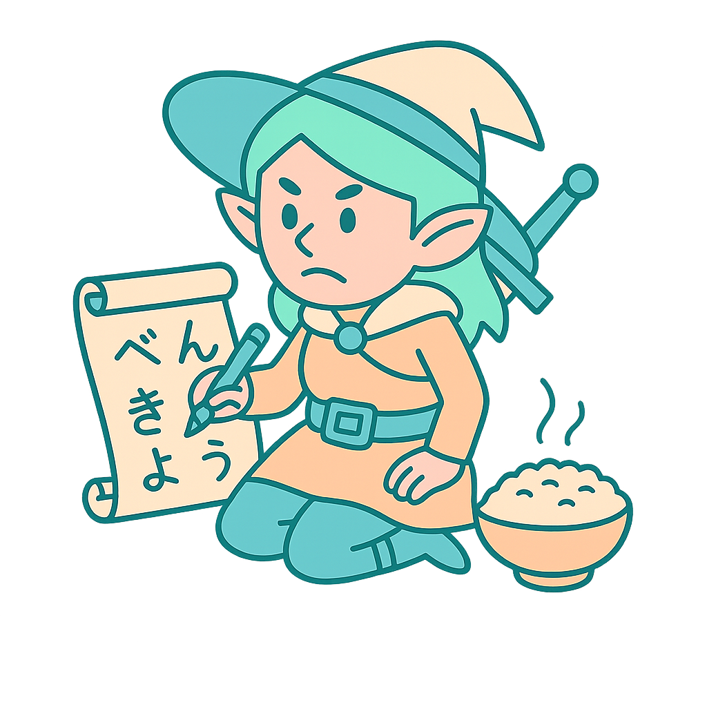

nihongo no dashi
exam: dec 7, 2025 · mission: pass jlpt n4 with confident listening / reading / grammar
daily study checklist
listening — 15–20 min（teppē）
write 3 words + 1 full sentence
write 3 words + 1 full sentence
reading — 10–15 min（nhk easy ≤6m）
highlight 2 grammar points
highlight 2 grammar points
grammar — 15–20 min（ので/から/のに・そうだ・つもりだ・てしまう）
reviews — wanikani & bunpro（at work）
tip: busy day? split into two quick blocks (am + pm).

weekly focus tracker
| week | focus | done |
|---|---|---|
| oct 14–20 | connectors（ので／から／のに／けど） | |
| oct 21–27 | てしまう・そうだ・つもりだ | |
| oct 28–nov 3 | reading speed + listening | |
| nov 4–10 | ように／ために（complex） | |
| nov 11–17 | mock 1 prep・timed practice | |
| nov 18–24 | weak‑point review（from mock 1） | |
| nov 25–dec 1 | final polish・mock 2 | |
| dec 2–6 | light review・confidence |

schedule mock exams
| test | date | type | done |
|---|---|---|---|
| mock 0 | oct 26 | short diagnostic (~1h) | |
| mock 1 | nov 16 | full timed | |
| mock 2 | nov 30 | final rehearsal |

status progress summary
| skill | current | goal | notes |
|---|---|---|---|
| vocabulary | n4 ready（wk 20） | strong recall | reinforce via reading |
| grammar | 85% done | 100% mastery | nuance（のに／けど／が） |
| reading | medium speed | ≤6m nhk | timed drills 3×/week |
| listening | improving | 80% teppei | daily shadowing |
| speaking | natural | maintain | 5‑min convos daily |